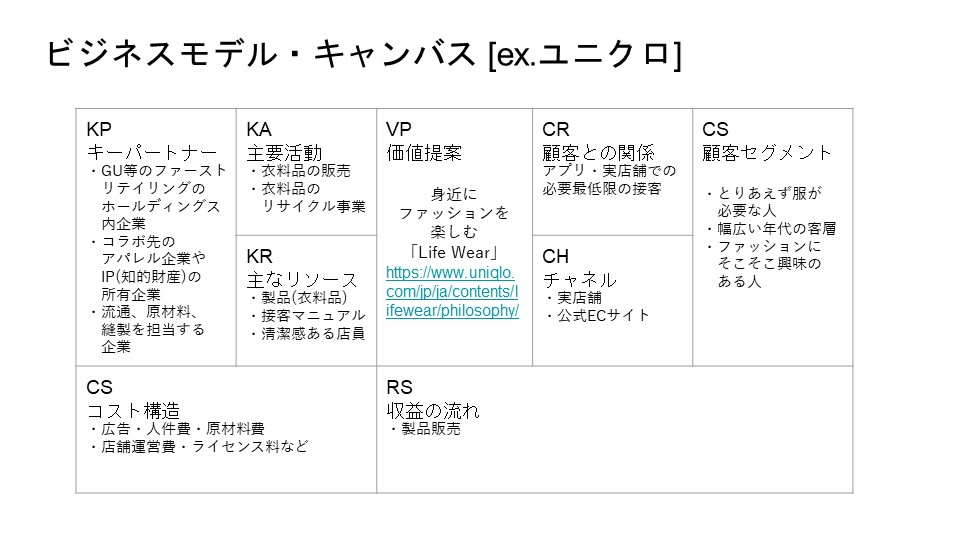

①CS顧客
とりあえず服が必要な人・幅広い年代の客層
ファッションにそこそこ興味のある人
→そこそこの機能、デザイン性はあり手頃な値段の服
②VP 価値提案
身近にファッションを楽しむ
「Life Wear」
③CH チャネル
実店舗・公式ECサイト
④CR 顧客との関係
アプリ・実店舗での必要最低限の接客
→必要最低限の接客…体感ユニクロ等のスタッフは他のアパレルショップと比較し提案の声を掛けてこない。
しかしアイテムの位置案内やフッティングルームの案内等は行っている。
この最低限の接客こそが、ターゲットとする顧客に対し効果的なアプローチとなっているのではないか？
⑤RS 収益
製品販売
⑥KR リソース
製品(服)・接客マニュアル・清潔感のある店員
⑦KA 主要活動
衣料品の販売・服のリサイクル事業(サステナビリティに配慮した活動)
→サステナビリティに配慮した活動…大量生産大量消費のイメージに対してアンチテーゼ的なアプローチ
UNIQRO Sustainability THE POWER OF CLOTHING
⑧KP パートナー企業
GU・ファーストリテイリング等ホールディングス内企業
コラボ先のアパレル企業、ブランドやIP(知的財産)の権利を持つ企業
(ex:ブランドコラボ・UT)
流通、原材料、縫製を担当する企業など
⑨CS コスト
広告・人件費・原材料費・店舗運営費・ライセンス料(コラボ)